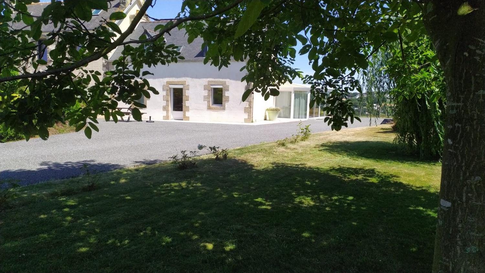
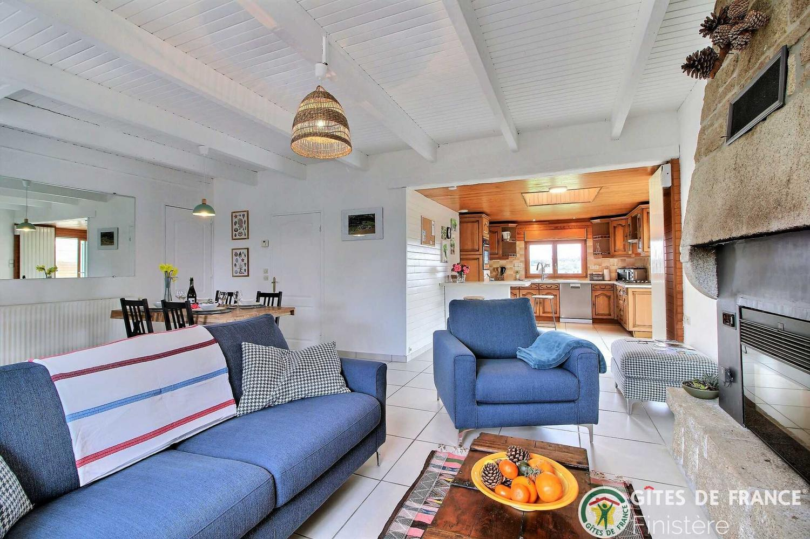
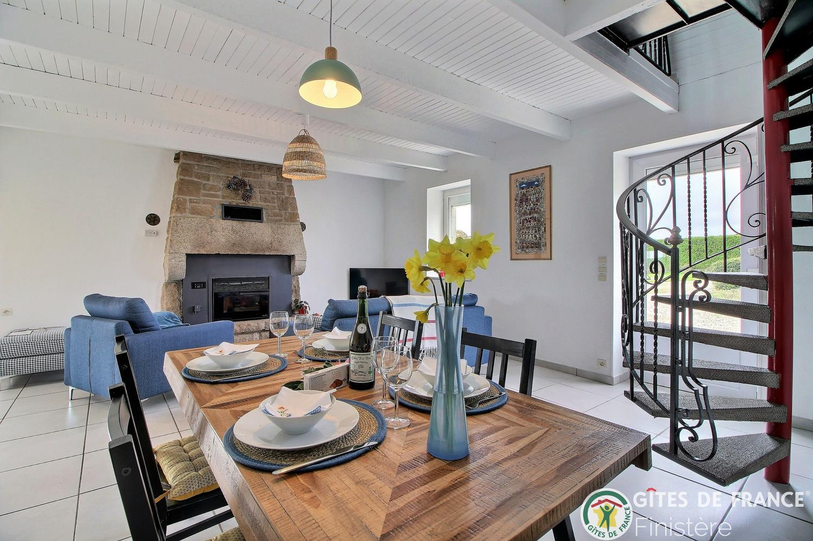
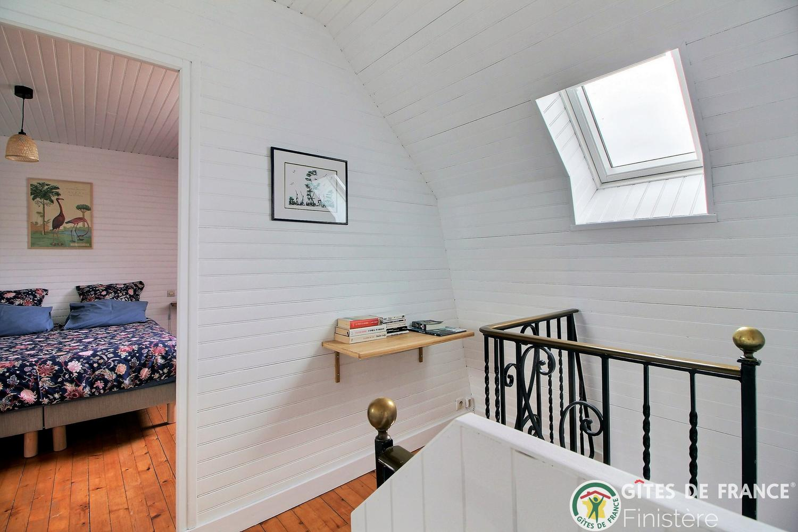
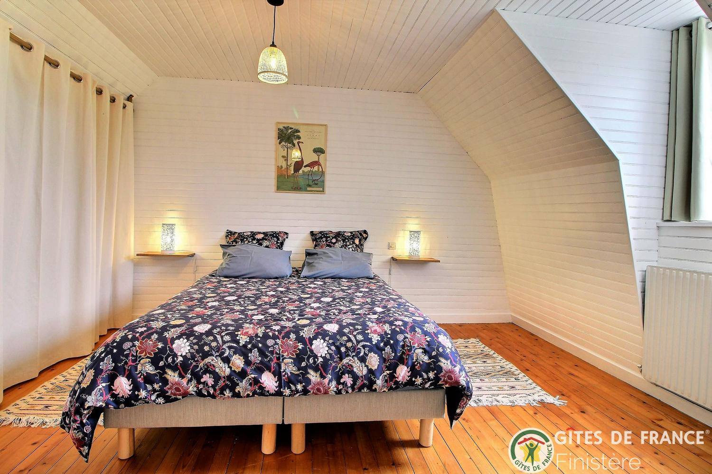
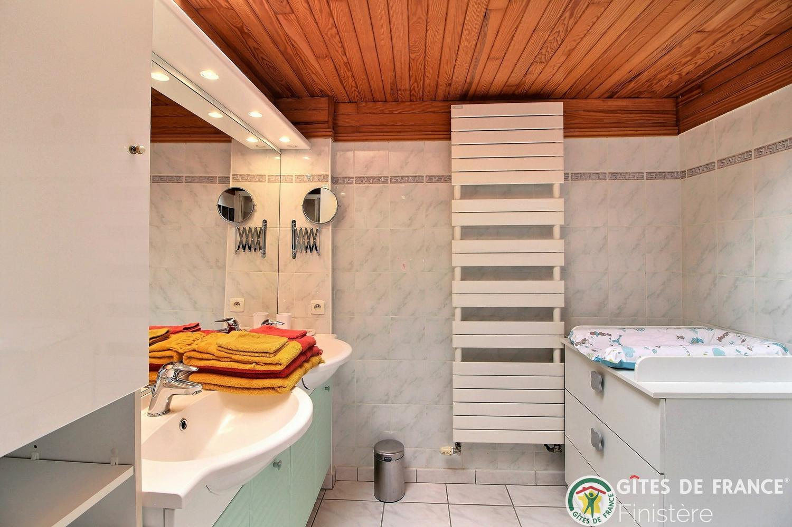
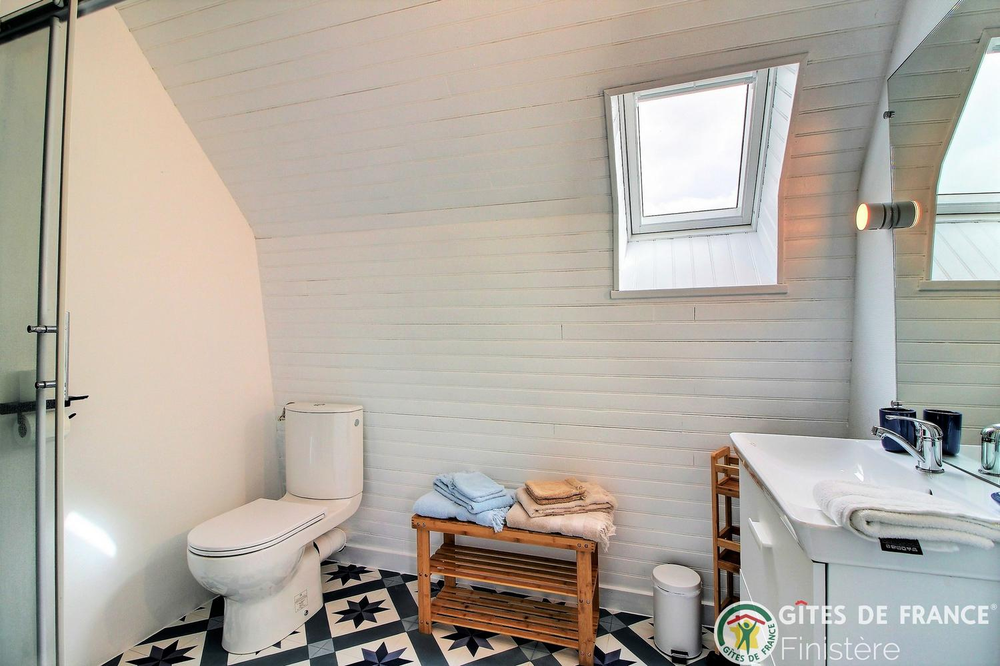

★★★★★
« Una estancia muy agradable »
Casa espaciosa, limpia y confortable, con la calma del campo y una hermosa vista. Acogida cálida de los propietarios. Gracias por todos los detalles: huevos, mermelada, queso de cabra.
Finistère · Bretaña · Francia
Una bonita casa de campo a pocos minutos de Morlaix, con una hermosa vista abierta a los campos ondulados y los animales de la granja. El punto de partida ideal para descubrir Bretaña, tanto junto al mar como en el campo.


Disfrute de una bonita casa de campo con una hermosa vista abierta a las ovejas de los propietarios y a los campos ondulados del norte de Finistère. Espaciosa, limpia y confortable, le espera para unas vacaciones de tranquilidad y naturaleza, a un paso de la bahía de Morlaix.
En el lugar podrá saborear quesos de cabra y mermeladas caseras, o conocer a los animales de la granja: una acogida cálida que encantará a grandes y pequeños. La ubicación es ideal para alternar mar y campo: playas, senderos de senderismo, patrimonio y crêperies bretonas le esperan.
Una casa pensada para unas vacaciones sencillas y relajantes, en verano y en invierno.
Una muestra de la casa, el jardín y la vista — ¡para el resto, venga a verlo!













La casa se encuentra en pleno campo, en Plourin-lès-Morlaix, el punto de partida ideal para explorar la bahía de Morlaix, las playas del canal de la Mancha y los paisajes del País de Morlaix.


Casa espaciosa, limpia y confortable, con la calma del campo y una hermosa vista. Acogida cálida de los propietarios. Gracias por todos los detalles: huevos, mermelada, queso de cabra.
Una semana excelente: casa grande, bien situada, limpia, rodeada de vegetación y pastos, sin ningún ruido. La región es preciosa y la acogida de los propietarios muy agradable. Volveremos con mucho gusto.
La casa es muy funcional y confortable: uno se siente como en casa. Muy cerca de Morlaix, de la bahía y de las playas, permite explorar este bello rincón de Bretaña, tanto la costa como el interior.
Casa espaciosa, confortable y perfectamente equipada, con una limpieza impecable. Flores frescas, crêpes, mermelada casera y sidra a nuestra llegada… ¡menuda acogida! Un extra muy apreciado: el cobertizo para el coche y las bicicletas.
Opiniones publicadas por viajeros en la ficha Gîtes de France® del gîte. Ver todas las opiniones
Todas las reservas y pagos seguros se realizan a través de Gîtes de France®.
Desde 370 € por semana. Consulte las tarifas y la disponibilidad en la ficha de Gîtes de France®.
Limpieza final de estancia: 60 €. Fianza: 200 €. Sábanas y toallas incluidas.
Por el confort de todos y la tranquilidad de los animales de la granja, no se admiten mascotas.
Sus anfitriones le reciben en francés y le aconsejan sobre la región. ¡Queso de cabra y mermeladas caseras en el menú!
Las reservas se realizan exclusivamente a través del sitio oficial de Gîtes de France®: disponibilidad en tiempo real, pago seguro y servicio de reservas por teléfono.
Reservar en gites-de-france.com